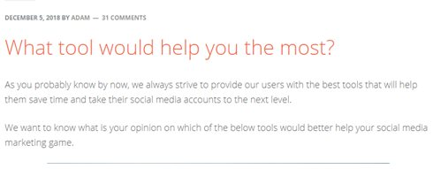

“Evergreen content” is a term you’ve probably heard countless times in reference to your blog or website. It refers to the content you share online that’s sustainable and consistently valuable. It’s not reliant on any seasonal demands or short-term trends. Evergreen content always has the right impact.
As part of a comprehensive content marketing strategy, Evergreen content makes a lot of sense. It gives your website “thought leadership” points by demonstrating that you know your way around some crucial industry topics. Evergreen content can also continue to attract visitors using common keywords and phrases all-year-round.

Heck, it even gives you something to link your customers to when you’re padding out your email marketing campaigns.
But what if you want to take your evergreen strategy to the next level?
What happens when you take the concepts of constantly valuable and shareable content into the world of social media?
What is an Evergreen Social Share List?
As an essential part of your brand reach strategy, your social media campaign needs to be filled with content that you can use to delight and engage your audience.
Unfortunately, finding content to share every day on your social channels can be an exhausting task.
Once you’ve finished commenting on the news of the day in your industry or letting people know about your latest blog post, how do you fill up your feed with extra value?
That’s where an evergreen social share list comes in handy.
Just like the evergreen content on your blog, an evergreen share list for social media is packed full of material that remains consistently relevant to your followers. This content doesn’t lose impact or go out of style, which means that you can use it as part of an automated social media campaign to keep your channels alive and interesting.
Evergreen social content:
- Reminds your followers of the topics that you know the most about, enhancing your thought leadership status.
- Highlights your position in the industry with engaging and interesting information.
- Makes sure you can stick to a consistent posting schedule, and therefore not lose the attention of your audience.
Here’s how you can curate a compelling evergreen share list for your social media plan.
1. Pull Evergreen Content From Your Blog
A good social media strategy isn’t just about promoting the latest content from your website or your newest products on the right channels. Your social platforms are your opportunity to connect with your target audience and show them what your brand is all about. What better way to do that than to draw attention to some of the evergreen content that your readers love?
Use your Google analytics data to find your top-performing posts on your website. Filter for organic traffic and find out which questions your customers most want to answer when they come to your site. For instance, if you’re a professional video editing brand, then people might want to know why they should be using video in their social media campaigns. A blog outlining all the benefits could make for a great piece of evergreen content to add to your share list.
Punctuating posts about your new material with reminders of the older, valuable evergreen posts you already have on your website will encourage people to continue going back to your website and listening to what you have to say. Posts taken directly from your website’s knowledgebase are a particularly good shout here. After all, you know that content is going to continue being useful for years to come:
2. Find and Share Evergreen Content from Other Sites
Drawing attention to your website and online presence is what great social media marketing is all about. However, it’s worth noting that your followers are looking to you to give them value every day, and they don’t necessarily mind if the content that they see comes directly from you.
Look into some of the leading companies in your industry – the people that you’d like to collaborate with if you ever had a chance. They’re sure to have some useful content that you can share on your company’s social media channels too.
Curating content from other websites to share as part of your social media strategy is a great way to fill out your schedule. It shows your audience that you’re committed to bringing them value in any form and that you don’t exist in a silo within your industry.
Additionally, the more you show respect to other companies in your social media marketing plan, the more likely it is that those companies will consider working more closely with you in the future.
Your decision to link customers on your Facebook page back to another website might cause the leader of that website to connect them to one of your blogs in the future. Alternatively, they could ask if you want to collaborate on a new project together or write a guest post for their site.
3. Turn Snippets into Tweetable/Grammable Quotes
Sharing a link back to your old blog posts and knowledgebase articles isn’t the only way to drive repeat customers to your website. You can also pull additional value from some of your existing evergreen content by pulling snippets or useful quotes out of your article and transforming them into handy snapshots of information.

Go through your favorite blog posts and look for something quotable. For instance:
The phrase highlighted above provides a concise piece of insightful information that tells the audience something important, while also encouraging them to find out more. A quote like that makes for an excellent social share.
You can either use the direct quote as a text update on Twitter, Facebook, or LinkedIn, or you can take things to the next level and spruce up your content calendar with some graphics. Create a pretty graphic using a tool like Canva, and overlay the quote on the top.
You can use a strategy like this to add quotable content to your Instagram marketing campaigns, and also stock your social media sharing schedule full of some engaging graphical content.
Images make content more shareable on social media, so converting your quote into a graphic could also mean that you attract more eyes too.
4. Cross Promote Social Media Accounts
The evergreen content for your social share strategy doesn’t always have to come from your blog or website. When companies set up automated social media marketing strategies, one of their primary goals is often to drive traffic back to their websites. However, you may also want to pull customers to your other social media channels too.
There’s a good chance that you’re using a number of platforms to connect with your audience today. The more followers you have on each platform, the greater the benefits for your brand. An active social media presence can make companies appear more credible in the eyes of their target audience.
When you’re looking for evergreen ways to fill out your social posting strategy, consider patching some of the gaps with cross-promotional links to your other accounts. For instance, your cross-promotional posts might look like:
- Want to put a #Pin in our ideas? Follow us on Pinteret…(link)
- Are we connected on LinkedIn? Find out more at (link)
- Need some visual inspiration? Find our brand on Instagram (link)
- We post on Twitter every day – why not follow us there? (link)
These quick posts will always be relevant to your social media strategy, making them a great part of your evergreen posting ritual.
5. Start Some Conversations
It’s surprisingly easy to forget about the “social” aspect of social media.
When you’re spending all your time posting content that links back to your latest products and services, you get into the habit of thinking that social media is all about promotion. However, the truth is that the more you can engage with your audience, the more they’ll fall in love with your brand.
What better way to power engagement than to start a conversation?
A question about something important in your industry gets your audience talking about the things that matter most to them. For instance, the Jarvee blog posted an article in December 2018 asking customers: “What tool would help you the most?”

A question like that added to your social media evergreen sharing strategy does a number of things. First, it shows your audience that you’re interested in their opinion and gives them an opportunity to get involved with the growth of your brand.
Secondly, questions that are relevant to your industry also give you a behind-the-scenes look into your customers and what drives their purchasing decisions. In the example above, if a social media automation company knows what kind of tools its customers needs most, it can make sure that it’s offering the right selection of products going forward.
6. Promote Your Popular Products/ Services
Probably one of the most obvious ways to fill out your social share list with evergreen content is to use your posts to promote your products and services. The whole point of running a corporate social media strategy is to improve your chances of selling to more customers, after all.
The important thing to remember when you’re adding promotions to your social sharing campaign, is that a lot of people hate being constantly “sold at” online. People mostly go to social media to connect with friends, be entertained, and learn new things. If your social channels are packed full of constant links to offers and your latest products, then you’re going to lose the respect of your followers.
However, used correctly, promotional posts can help to break up your social schedule, and give you more content to share. To keep things on the right track, try sticking to the “Golden Ratio for Social Media Marketing.”
The golden ratio indicates that 10% of your social schedule should be made up of promotional posts, while 60% is curated content, and 30% is owned content. That means that for every 1 link you share back to a product or service on your site, you share 3 links to evergreen blog content, infographics, and videos on your website. You also share 6 curated pieces from other websites, news articles, and trending content for every 1 promotional post.
7. Share your Best Reviews
So if you can only use a handful of promotional posts in your social media schedule, how do you make sure that you’re constantly reminding people of how excellent your products are?
How about having your customers do the promotion for you?
As you continue to evolve as a business, attracting reviews and testimonials from happy customers who have worked with you in the past, you’ll curate a lot of valuable user-generated content. This content comes directly from the customers that love your company, and it gives you an excellent way to show your audience just how credible and valuable you can be.
Here are just some of the ways that you can boost your reputation with a little social proof in your evergreen social strategy:
- Share links to your case studies: Build in-depth case studies from experiences with crucial customers and publish them on your website. Then share links regularly to your case studies of a reminder of what you can accomplish.
- Share quotes from testimonials: Just as you plucked quotable lines from your blogs for your Twitter and Instagram shares above, you can do the same thing with quotes from your customers. Quotes from happy customers show your followers just how amazing your product or service can be, and they don’t count as shameless self-promotion.
- Repost/Retweet and Regram: When customers post pictures, videos, or information about them using your products or services on their social media accounts, ask for permission to save and re-use that content in the future.
8. Offer Helpful Tricks and Tips
Finally, if you’re still looking for ways to fill your social sharing calendar with evergreen content, why not show your audience that they don’t have to go all the way to your website to get value? If you want to be a thought leader in your industry, then tips and useful advice about how to do important things will delight and engage your audience.
Speak to your sales and marketing team about the questions that they see most often from your target audience. Alternatively, browse through the FAQ page on your website and pluck some questions from there. Then, when you’re filling your social media calendar for the month, put a few question and answer posts into your schedule that give your audience helpful tricks, tips, and bite-sized amounts of information.
Updates like these can be as simple as you like. For instance, you might share “Tip #7: Always segment your audience with your email marketing campaigns.”
To enhance the impact of the social share, include a link back to a blog page or video on your site where customers can learn more about a topic relevant to the quote. These quick-fire tips are excellent for reminding your followers of your value, and you can use the same revolving set of 100 or so tips on a constant basis.
Keep Your Social Feed Fresh with Evergreen Content
Too many companies think that if they want to be successful with their social media marketing, they need to constantly share new and trending content. However, the truth is that evergreen content can be just as valuable to your social media feed as it is to your blog or content marketing strategy.
Lists of recyclable and evergreen content make it easy to build an automated social media marketing routine that keeps your digital presence active and engaging online. Making an investment in evergreen content now ensures that you can spend less time scrambling for something to share on your social feeds, and more time reaping the results of an incredible social campaign.
Leave a Reply